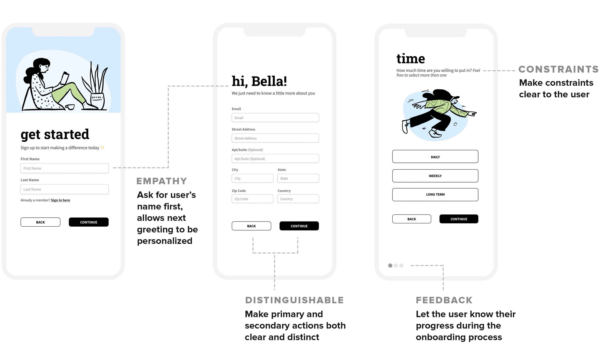
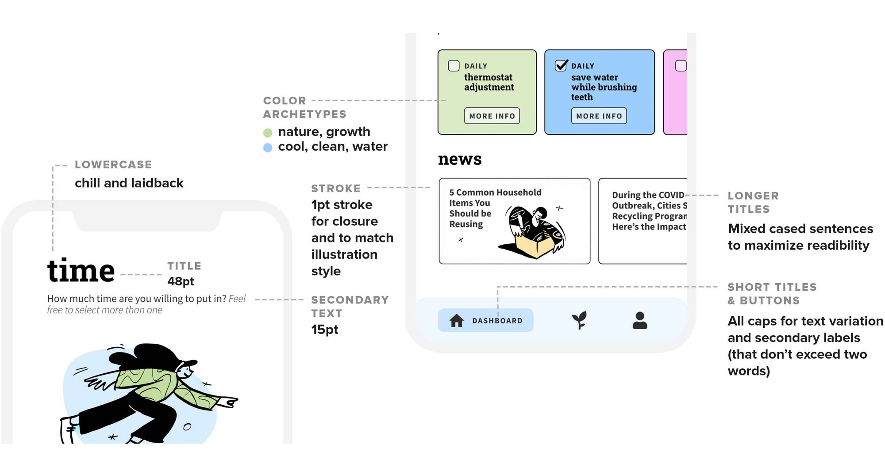

Background
- Bloom TL;DR: A mobile app that encourages users to adopt sustainable habits
- My Role: Lead designer, established overall branding and directed high fidelity prototyping
- Team: Arina Romanova, Chintan Jani, and Nicole Lopez
- Timeline: 48 hours
- Tools: Figma for Prototyping, opendoodles for illustrations, and flaticon for icons
Preview
A quick preview of Bloom, an app that
encourages users to adopt sustainable habits
Introduction
Design a solution for a movement or
topic
you're passionate about in 48-hours
Within 48 hours, teams were asked to decide on an issue to address and design a screen-based solution. After multiple calls and brainstorming sessions, my team decided to tackle sustainable activsim. The wildfires on the West Coast were rampant during this designathon, and our team found it fit to design an app that could bring attention to the dangers of climate change and present possible solutions for individuals who want to help the environment.
The Problem
How do we make climate change a
more personal problem?
“Climate change is an issue” - and that’s where most people stop. While many people are aware of climate change, many feel helpless or overwhelmed by the breadth of the issue; “how could I, as an individual, make an impact on this earth?” Many people don’t believe climate change affects them because it feels invisible and like a distant problem, so how can we make climate change a more personal problem to individuals and encourage them to make actionable changes to their consumption behaviors?
Ideation & User Analysis
Getting personal and making
sustainable tasks manageable
In the short amount of time we had, we decided to informally interview our close friends and family about their thoughts on climate change and building sustainable habits.
Audience:
We decided to target
people between the ages of 15-24 who are comfortable with technology
and are the forefront of youth activism and social change.
Pain Points:
Consumers want to purchase
healthy options, but there is an overload of information or
prices are too high, or sustainable options aren’t as available
- People don’t understand the urgency of climate change, it does not affect them personally so why change their habits
- Even those who want to change their behaviors feel overwhelmed by the many ways in which it can’t be done
- People want cheap prices and purchasing them in time-efficient ways but can’t seem to find both
Insights:
Product Decisions
What features would be the most
useful to users?
Based on our research and competitive analysis, we decided to make Bloom a hybrid of JouleBug, Buycott, and Recycle Nation and synthesize the most impactful traits of each, creating a “one-stop-shop” for building sustainable habits and learning about the user's impact. In our app, we wanted to focus on three main features:

tasks
Introduce tasks of varying durations (daily, weekly, yearly) and type of habit (transportation, water usage, etc), depending on what the user is interested in and earn points for every task completed
community
Create a community that incentivizes behavioral changes through leaderboards, badges, and community progress depending on how many tasks are completed
news
Inform people about events related to climate change and a variety of other articles that promote sustainable habits and educate users about climate change
To make these features more curated and user focused, in addition to
these three key points of our app, we wanted to include an onboarding
process that makes tasks, news articles, and other recommendations
unique to the user’s needs and goals.
Design Iterations & Decisions
How can we make the UI clean, stylish, and accessible?

Accessibility: To make our design as acessible as possible, we made sure that all background and foreground colors had a contrast ratio of at least 4.5:1 according to Web Content Accessibility Guidelines (WCAG). In the earlier iterations of our design, we had poor color contrast with the navigation bar, as shown on the left. Additionally, we followed iOS Typography Guidelines to maximize readability.
Onboarding: For our onboarding process, we wanted to make it both personable and straightforward. Firstly, we opted to ask for the user's first and last name at the beginning, enabling the following screen to be personalized with the user’s name.
Overall Branding: For overall branding, we wanted our app to look clean and appeal to a younger audience. Thus, we chose two-dimensional illustrations, pastel colors, and all lowercase headers to give off a chill, approachable vibe. The app's primary color, a muted green, envokes themes of sustainability and growth. To make illustrations seamlessly blend in with the overall interface, we decided to add a black stroke to most boxes and buttons for clear continuity and closure.
Takeaways & Next Steps
Focusing on our strengths as a team
Just Design was my third designation, and it was one of the most
smooth and efficient experience I’ve had. On our first call as a
team, we immediately started by getting to know each other as people,
students, and designers.We made it clear what our strengths
and weaknesses were right off the bat, which made
delegating tasks both quick and straightforward.
Chintan and I found our strengths in high-fidelity prototyping,
while Nicole and Arina were both confident in user research and
ideation. We funneled our focus and attention where we
felt the most confident and felt the happiest doing,
without missing out on the entire design process.
User research & usability testing
Due to the time constraint and the high-speed nature of weekend designathons, we did not have time to conduct user interviews, create personas, or go through multiple rounds design iterations and user feedback. If I had more time, I would conduct more research and interviews to understand users better and create a solid foundation before designing